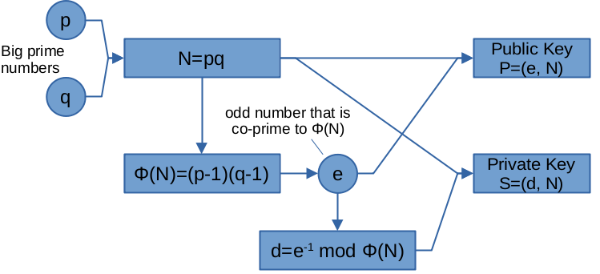

量子计算会终结现在的密码体系吗？(2) 因式分解和Order Finding问题
Ping Zhou, 2021-04-26
上文回顾：RSA公钥加密算法
在上文中我们讲了以RSA为代表的公钥加密算法，以及为什么其安全性的核心是因式分解问题。

那么为什么量子计算机能高效求解因式分解问题呢？这是因为，因式分解可以转化为Order Finding或函数周期求解问题，而这类问题，正是量子计算机所能高效求解的！
下面我们就来看一下，如何将因式分解问题转化为Order Finding问题。
Order Finding问题
给定两个互质的数N和a，求使得 \(a^r=1 \mod N\) 的最小整数r，这就是所谓的Order Finding问题。求出的r，称为“the order of a modulo N”。
如果 \(a^r=1 \mod N\) ，那么很显然 \(a^{2r}, a^{3r}, \dots\) 也对N取模为1。
进一步推论，如果a的幂取任意整数 \(x=jr+l\) ，那么 \(a^x=a^{jr+l}=a^{jr}a^l=a^l \mod N\) ， 同理可知 \(a^{x+r} = a^xa^r = a^x \mod N\) 。
因此如果我们定义一个函数 \(f(x)=a^x \mod N\) ，那么这个函数的值其实是 以r为周期的 ，即 \(f(x)=f(x+r)\) 。因此Order Finding问题就相当于找到这个函数f(x)的周期。
例如N=15，a=7，那么 \(f(x)=7^x \mod 15\) 函数的值：
| \(x\) | 0 | 1 | 2 | 3 | 4 | 5 | 6 | \(\dots\) |
|---|---|---|---|---|---|---|---|---|
| \(f(x)\) | 1 | 7 | 4 | 13 | 1 | 7 | 4 | \(\dots\) |
不难看出，7对15模的order是4，因此这个函数的值是以4为周期不断重复。
看起来很简单吧！为什么这个问题对因式分解，乃至RSA公钥加密算法那么重要呢？
为什么因式分解问题可以转化为Order Finding？
假设要分解的大数是N，如何把它转化为Order Finding问题呢？
- 首先我们看，如果N是偶数，那么已经找到了一个因子2，问题解决；
- 如果N不是偶数，那么从1到N-1中随机选一个和它互质的数a，求x对N的order，\(a^r=1 \mod N\) ；
然后，如果求到的r是偶数，那么我们有：
\[ a^r = (a^{r/2})^2=1 \mod N \]
因此
\[ (a^{r/2})^2 - 1 = 0 \mod N \]
等式左边可以分解为 \((a^{r/2}-1)(a^{r/2}+1)\) ，而它们的乘积能被N整除。 因此， \(a^{r/2}-1\) 和 \(a^{r/2}+1\) 这两个数至少有一个含有和N的（大于1的）公约数！
所以我们要做的，就是用它们分别与N求最大公约数：
\begin{matrix} GCD(a^{r/2}-1, N) \\ GCD(a^{r/2}+1, N) \end{matrix}两个最大公约数中，必然能找到N的非平凡因子，问题解决！
如果r是奇数，没关系，我们回到第2步重新选a，不断重复，直到得到一个偶数的r。 因为每次选到的x求出的r为奇偶数的概率是二分之一，这样重复几次，就能以很高的概率得到偶数的r，从而求出N的因子。
上面这些步骤中，除了Order Finding外，其他步骤都可以在经典计算机上用多项式时间解决。
所以，如果我们能高效的解决Order Finding问题，也就能高效的解决大数因式分解问题了！
而这关键的一步，正是量子计算机大展身手的地方！
【举个栗子】
假如要分解的数N=15，我们随机选了一个与它互质的数a=7，在前面的讨论中我们已经知道 \(7^4=1 \mod 15\) ，因此7对15模的order是4。然后我们分别计算：
\begin{matrix} GCD(7^{4/2}+1, 15) = GCD(49+1, 15) = 5 \\ GCD(7^{4/2}-1, 15) = GCD(49-1, 15) = 3 \\ \end{matrix}这样我们就成功的得到了15的非平凡因子5和3。